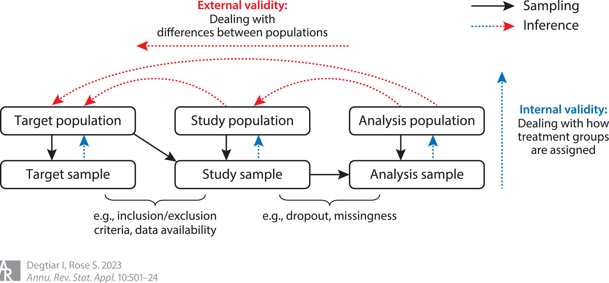
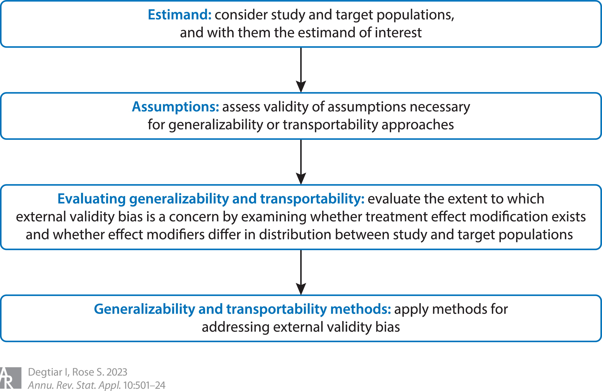

Reading note: A Review of Generalizability and Transportability
Degtiar I, Rose S. A Review of Generalizability and Transportability. Annual Review of Statistics and Its Application. 2023;10(1):501–24. https://doi.org/10.1146/annurev-statistics-042522103837
Keywords of the paper
generalizability, transportability, external validatiy, treatment effect heterogeneity, causal inference
1. Introduction
Target population: the particular population that we hope to gain understanding of.
Study population: a hypothetical population that the study sample represents, defined by enrollment processes and inclusion or exclusion criteria.
Target and study population are usually different.
Analysis population: created by post-enrollment, further dropout and missingness.

Key concepts of extending causal inferences beyond a study sample:
Generalizability: the study population is a subset of the target population of interest.
Transportability: the study population is (at least partly) external to the target population.
Internal validity: defined as an effect estimation being unbiased for the causal treatment effect in the population from which the sample is a simple random sample.
External validity: how well results generalize or transport to other contexts, specifically that the (internally valid) effect estimate is unbiased for the causal treatment effect in a different setting, such as a target population of interest. (External validity bias = sample selection bias)
Confounder: factors associated with both the treatment and the outcome, which causes spurious treatment-outcome associations.
Effect modifier: factor whose levels associated with different treatment effects.
External validity bias arises from differences between the study and target populations in (a) subject characteristics; (b) settings, such as geography or type of health center; (c) treatment, such as timing, dosage, or staff training; (d) outcomes, such as length of follow-up or timing of measurements. (cited..).
Most generalizability and transportability methods address differences in subject characteristics (a) and assume all the other threats do not exist in the data sources they are looking to generalize across.
Then, external validity bias arises solely from (a1) variation in the probability of enrollment in the study, (b1) heterogeneity in treatments, and (c1) the correlation between items (a1) and (b1). (cited..).
Therefore, we distinguish between factors differentiating the target population from the study population (external validity bias) and those that create differences between treatment groups (internal validity bias), e.g. confounders.
The optimal solution to external validity bias centers on study design.
One ideal design would randomly sample subjects from the target population and then randomly assign treatment to the selected individuals. (INFEASIBLE!).
Alternative study designs includes purposive sampling, in which investigators deliberately select individuals for reasons such as representative or heterogeneity; pragmatic or practical clinical trials, which aim to be representative of clinical practice; stratified selection based on effect modifiers or propensity scores for selection; and balanced sampling designs for site selection that select representative sites through stratified ranked sampling. (cited..).

2. Estimand
2.1 Notations:
\(Y\): outcome;
\(A \in \{0,1\}\): (binary) treatment;
\(\mathbf{X} \in \mathbb{R}^d\): baseline covariates, including all potential treatment effect confounders and effect modifiers that differ between the study and target populations;
\(S=1\): an indicator of subject being included in the study sample;
\(O_{\text{study}} = (\mathbf{X}, A,Y, S=1)\): an observational unit for the study sample;
\(P_{\text{study}} \in \mathcal{M}_{\text{study}}\): probability distribution of \(O_{\text{study}}\), where \(\mathcal{M}_{\text{study}}\) is the collection of possible probability distributions (i.e., statistical model);
\(n_{s}\): sample size of \(O_{\text{study}}\), indexed by \(j\).
\(O = (\mathbf{X}, A, Y, S) \sim P \in \mathcal{M}\): an observational unit for a representative sample from the target population;
\(n\): sample size of \(O\), indexed by \(i\).
Target sample subjects who do not appear in the study sample will have \(S=0\).
Terminology “selected” or “sampled” are used throughout the article for simplicity, although for transportability, subjects are not directly sampled into the target population.
For generalizability, \(O_{\text{study}} \in O\); for transportability, \(O_{\text{study}} \notin O\) (the two sets are disjoint).
2.2 Estimand of interest:
The target population average treatment effect (PATE):
\[
\tau = \mathbb{E}(Y^{(1)} - Y^{(0)}) =
\mathbb{E}_{\mathbf{X}}[E(Y|S=1, A=1, \mathbf{X})] - \mathbb{E}_{\mathbf{X}}[E(Y|S=1, A=0, \mathbf{X})]
\]
Its corresponding estimator:
\[
\hat{\tau} = \frac{1}{n} \sum_{i=1}^n \left(\hat{Y}_i^{(1)} - \hat{Y}_i^{(0)} \right).
\]
Different target populations correspond to alternative PATEs because the expectation is taken with respect to alternative distributions of covariates \(\mathbf{X}\).
However, since we only observe outcomes in the study sample, the study directly estimates the sample average treatment effect (SATE): \[
\tau_s = \mathbb{E}(Y^{(1)} - Y^{(0)}|S = 1)
\] with estimator \[
\hat{\tau}_s = \frac{1}{n_s} \sum_{j=1}^{n_s} \left(\hat{Y}_j^{(1)} - \hat{Y}_j^{(0)} \right).
\]
Other estimands of interest:
E.g. the target population conditional average treatment effects (PCATEs): \[
\tau_x = \mathbb{E}(Y^{(1)} - Y^{(0)}|\mathbf{X});
\] the target population average treatment effects among the treated: \[
\tau_1 = \mathbb{E}(Y^{(1)} - Y^{(0)}|A=1),
\] etc.
2.3 Relations between SATE, PATE, and the true quantities:
- When there is difference in the distributions of treatment effect modifiers between the study and target populations, which may induce external validity bias,
SATE \(\neq\) PATE in general.
- Sampling variability and internal validity biases can also drive estimates of SATE further from the truth.
- Biases may differ in magnitude and may make the SATE either larger or smaller than the PATE.
3. Assumptions
3.1 Internal validity
Assumption 1 (Conditional treatment exchangeability): \(Y^{(a)} \perp\!\!\perp A | \mathbf{X}, S = 1\) for all \(a \in \mathcal{A}\), the set of all possible treatments.
- No unmeasured confounding factors.
This condition is sufficient, but not necessary. When estimating the PATE, it can be replaced by (the weaker condition of) the mean conditional exchangeability of the treatment effect: \(\mathbb{E}(Y^{(1)} - Y^{(0)}|\mathbf{X}, A, S=1) = \mathbb{E}(Y^{(1)} - Y^{(0)}|\mathbf{X}, S=1)\).
Assumption 2 (Positivity of treatment assignment): \(P(\mathbf{X}=\mathbf{x}|S=1)>0 \Rightarrow P(A = a|\mathbf{X}=\mathbf{x}, S=1)>0\), with probability 1 for all \(a \in \mathcal{A}\).
- Each sugject in the study has a positive probability of receiving each version of the treatment.
- In the combination of the conditional treatment exchangeability assumption above, this assumption is known as strong ignorable treatment assignment.
Assumption 3 (Stable unit treatment value assumption (SUTVA) for treatment assignment): If \(A = a\), then \(Y = Y^{(a)}\).
- It requires no interference between subjects and treatment version irrelevance in the study and target populations.
3.2 External Validity
Assumption 4 (Conditional exchangeability for study selection): \(Y^{(a)} \perp\!\!\perp S | \mathbf{X}\) for all \(a \in \mathcal{A}\).
Also known as exchangeability over selection and the generalizability assumption.
It requires the outcomes \(Y^{(a)}\)among individuals with the same treatment \(A = a\) and covariate values \(\mathbf{X} = \mathbf{x}\) in the study and target populations are the same.
All effect modifiers that differ between study and target populations must be measured.
When calculating PATEs, this assumptions can be replaced by a weaker condition, the mean conditional exchangeability of selection: \(\mathbb{E}(Y^{(1)} - Y^{(0)}|\mathbf{X}, S=1) = \mathbb{E}(Y^{(1)} - Y^{(0)}|\mathbf{X})\).
Assumption 5 (Positivity of selection): \(P(\mathbf{X} = \mathbf{x}) > 0 \Rightarrow P(S=1|\mathbf{X} = \mathbf{x}) > 0\) with probability 1.
Requires common support with respect to study selection;
In every stratum of effect modifiers, there is a positive probability of being in the study sample or being represented by study participants.
It can be replaced by smoothing assumptions under a parametric model, for example, that the propensity score distribution for study selection has sufficient overlap or common support between the study sample and target population.
With conditional positivity of selection, we assume that all members of the target population are represented by individuals in the study.
Assumption 6 (Stable unit treatment value assumption for study selection): If \(S = s\) (and \(A = a\)), then \(Y = Y^{(a)}\).
No inference between subjects selected into the study vs those not selected and treatment version irrelevance between study and target samples (the same treatment is given to both).
It necessitates that there is no difference across study and target samples in how outcomes are measured or in how the intervention is applied, that there is a common data-generating function for the outcome across individuals in the study and target populations (i.e. that being in the study does not change treatment effects), and that the potential outcomes are not a function of the proportion of individuals selected for the study.
3.3 Transportability
For generalizability, the study sample is a subset of the target population; therefore, the positivity assumption for selection will need to be bounded away from 0;
For transportability, the study sample is not a subset of the target population; thus, the propensity to be in the study population will need to be bounded away from 0 and 1. Besides, the set of covariates, \(\mathbf{X}\), required for conditional exchangeability for study selection cannot include those that separate the study sample from the target population.
4. Evaluating Generalizability and Transportability
External validity bias exists when study populations differ in their distribution of effect modifiers; these assessments therefore examine population differences and whether treatment effect heterogeneity exists.
4.1 Assessing Dissimilarity Between Populations with Baseline Characteristics
When only summary-level study data are available, it is possible to examine differences in univariate covariate metrics between study and target samples.
Cahan et al. (2017): propose a generalization score for evaluating clinical trials that incorporates baseline patient characteristics, the trial setting, protocol, and patient selection: it takes ratios of the mean of median values of these characteristics in the study and target samples and then averages across categories for an overall score. However, it does not account for any measures of dispersion, which may reflect the exclusion of more heterogeneous individuals from the study. When only baseline patient characteristics are responsible for relevent population differences, Greenhouse et al. (2008) perform multiplicity-adjusted univariate tests for differences in modifiers between study and target samples, and Tipton & Peck (2017) perform exaimination of absolute standardized mean differences(SMDs) for each covariate: \((\bar{X}_{\text{study}} - \bar{X}) / \sigma_{\bar{X}}\), where quantities without subscript “study” indicates the corresponding summary statistics of the target samples. High values indicate heavy extrapolation and reliance on correct model specification.
Examining the joint (rather than the univariate) distributions of patient characteristics more comprehensively assesses overlap. Tipton (2014): generalizability index that bins propensity scores and is bounded between 0 and 1. Besides, other propensity score distance measures can be used, such as Q-Q plots, etc., which largely focus on comparing cumulative densities. To assess the degree of extrapolation, one can examine overlap in the propensity of selection distributions, such as in Tipton & Peck (2017) the proportion of target sample individuals with propensity scores outside the 5th and 95th percentiles of the sample propensity scores.
The machine learning literature Glauner et al. (2017) provides an alternative approach by detecting distributional shift of covariate between the study (training) and target (test) samples. First, they create a joint data set with target and study sample data, and then use a classification algorithm to predict whether the data come from the study. The dissimilarity between training and test data sets is suggested by a threshold of acceptability. However, this method does not rule out differences in effect modifiers. A low score might furthermore indicate an incorrect model specification or insufficient model tuning.
These tests require knowledge of which characteristics moderate the treatment effect (or are correlated with unmeasured effect modifiers) and what level of differences are substantively relevant. In a propensity score based approach that includes or tests more than one covariate, it prioritizes predictors that are strongly (statistically) associates with study selection rather than those that exhibit strong effect modification. Investigators should aim to identify relevant effect modifiers for testing or inclusion in the propensity score regression and test this subset.
4.2 Assessing Dissimilarity Between Populations with Outcomes
When individual-level outcome data or joint distributions of group-level outcome data are available in both the study and target samples for at least one of the treatment groups, the following methods can assess the extent to which measured effect modifiers account for population differences: Stuart et al.(2011) compares the observed outcomes in the target sample with predicted outcomes using study controls. Hotz et al. (2005) compares study individuals who received the same treatment: \(1/n_a \sum_{i=1}^N 1(A_i = a) Y_i\) vs \(1/n_{s,a} \sum_{i:S_i = 1}1(A_i = a)w_iY_i\), with weights \(w_i\) defined by weighting and matching methods. Hartman et al. (2015) formalizes this comparison with equivalence tests.
To detect unmeasured effect modification, we can compare these two quantities: \(\hat{\mathbb{E}}(Y|\mathbf{X}, A = a, S = 1)\) (for study samples) vs \(\hat{\mathbb{E}}(Y|\mathbf{X}, A = a, S = 0)\) (for nonstudy target samples), where \(\mathbf{X}\) are the measured effect modifiers. Possible tests include analysis of covariance, Mantel-Haenszel, U-statistic-based tests, stratified log-rank, or stratified rank-sum, depending on the outcome. Marcus (1997) Hotz et al. (2005) Luedtke et al. (2019)
To assess the sufficiency of the estimation approach, Pan & Schaubel (2009) tests for differences between study and target regression coefficients or between baseline hazards in a Cox regression. Any identified differences in outcomes or effects will reflect sample differences unaccounted for by the outcome or weighting method, indicating unmeasured effect modification or an ineffective modeling approach. To have this comparison reflect relevant differences, study controls must be representative of the target population after weighting or regression adjustment. Hartman et al. (2015) provides a more formal set of identifiability assumptions that may be violated when each equivalence test is rejected. Sensitivity analysis can be performed to assess the extend to which it can impact results Marcus (1997) Nguyen et al. (2017) Dahabreh et al. (2019c) or to generate bounds on the treatment effect when only partial identification is possible Chan (2017).
4.3 Identifying Treatment Effect Heterogeneity
Tests of prespecified subgroups should focus on target population subgroups under- or over-represented in the study, or any other substantively relevant subgroup expected to exhibit effect heterogeneity.
When effect modifiers are known a priori, Methods that test several effect modifiers individually are underpowered to detect significant effects after incorporating multiple testing adjustments. To address this lack of power, sequential tests for identifying treatment-covariate interactions can be used Qian et al. 2019. Alternative approaches include testing whether the conditional average treatment effect is identical across predefined subgroups Crump et al. (2008) Green & Kern (2012), comparing subgroup effects to average effects Simon (1982), and identifying qualitative interactions or treatment differences exceeding a prespecified relevant threshold Gail & Simon (1985).
When effect modifiers are not known a priori, a variety of techniques identify subgroups with heterogeneous effects. These include those that identify variables that qualitatively interact with treatment (i.e., for which the optimal treatment differs by subgroups) Guter et al. (2011), and determine the magnitude of interaction Tian et al. (2014) Chen et al. (2017). Machine learning approaches also identify subgroups with heterogeneous treatment effects while minimizing modeling assumptions. Approaches that also present tests for treatment effect differences between subgroups include Bayesian additive regression trees (BARTs) and other classification and regression tree (CART) variants (tree-based methods!) Su et al. (2008) Su et al. (2009) Green & Kern (2012) Athey & Imbens (2016) Tree-based methods develop partitions in the covariate space recursively to grow toward terminal nodes with homogeneity for the outcome. May be particularly useful when heterogeneity may be a function of a more complex combination of factors.
At the existence of many effect modifiers, or when effect modifiers are unknown, global tests for heterogeneity can be used, which is to identify whether treatment effect heterogeneity exists. However, these tests do not identify effect modifiers; if a global test is rejected, one can then compare individual subgroups to determine which demonstrate effect heterogeneity. (Methods…)
If these assessments of generalizability fail and the target population is not well-represented by the study population (specifically, when strong ignorability fails), Tipton (2013b) provides recommended paths forward. Investigators can change the target population to one represented by the study. Alternatively, investigators can retain the original target population and note the limitations of extrapolated results and likelihood of remnant bias.
5. Methods for Estimating Population Average Treatment Effects.
The following analytic methods are developed to generalize or transport results from randomized or observational data to a target population.
To mitigate external validity bias, generalizability and transportability methods address differences in the distribution of effect modifiers between study and target populations.
5.1 Matching and Weighting Methods
Matching and weighting-based approaches account for the probability of selection into the study rather than the probability of treatment assignment.
These methods are effective when effect modifiers strongly predict selection into the study. They strongly rely on common covariate support between study and target populations and perform poorly when a portion of the target population is not well-represented in the study sample or when empirical positivity violations occur.
Including unecessary covariates can decrease precision, increase the chance of extreme weights and difficult-to-match subjects, and provide no bias reduction. Nie et al. (2013) Failing to include an effect modifier is more of a concern than including unnecessary covariates Stuart (2010) Dahabreh et al. (2020).
5.1.1 Matching
Full matching:Staurt et al. (2011)
This approach fully matches study and target sample individuals based on propensity scores to form sets, each with at least one study and target individual.
Individual’s outcomes are then reweighted by the number of target individuals in their matched set.
This approach relies heavily on the distance metric, which can be misled by covariates that do not affect the outcome.
Fine balance: Bennet et al. (2020)
This approach matches samples to a target population to achieve fine balance on covariate means rather than working with the propensity score.
For example, each clinic patient would be matched to a treated and a control patient in the RCT to attain balance on the marginal distributions of \(\mathbf{X}\)s.
It is a computationally efficient approach that accommodates multivalued treatments.
Matching methods require calibration for bias-variance trade-off such as via a caliper or by choosing the ratio of study to target individuals to match.
5.1.2 Weighting
In low-dimensional setting with categorical or binary covariates, nonparametric poststratification (also known as direct adjustment or subclassification) has been used with randomized data and with observational data in the context of instrumental variables. Poststratification obtains estimates for each stratum of effect modifiers, then reweights these estimates to the effect modifier distribution in the target population:\[
\hat{\mathbb{E}}[Y^{(a)}] = \frac{1}{n} \sum_{l=1}^L n_l \bar{Y}_{l}^{(a)},
\]
where \(L\) is the number of strata, \(n_l\) is the target sample size in stratum \(l\), \(n = \sum_{l=1}^L n_l\), and \(\bar{Y}_l^{(a)}\) is an estimate from study sample data of the potential outcome on treatment \(a\) in stratum \(l\), commonly the stratum-specific sample mean for subjects on treatment \(a\).
When there are insufficient strata (e.g. empty strata), which is usually an issue with continuous variables or many stratifying variables, residual external validity bias remains. To address it, inference can be pooled across strata using mltilevel regression with poststratification. For higher-dimensional settings or with continuous covariates, flexible nonparametric approaches can be applied, such as maximum entropy weighting Hartman et al. (2015).
Most weighting approaches uses a propensity of study selection regression to construct weights. They rely on correct specification of the propensity score regression and sufficient propensity score overlap between study subjects and target sample individuals not in the study. The most straightforward weighting approaches tend to have large variances in the presence of extreme weights: give disproportionate weight to outlier observations, and produce outcome estimates outside the support of the outcome variable. Weight standardization as well as weight trimming can address these issues, although the latter one requires a bias-variance trade-off as it induces bias by changing the target population of interest.
For generalizability:
Inverse probability of participation weighting (IPPW) (cited…). It weights the outcome for each study individual on treatment \(a\) by the inverse probability (propensity) of being in the study. Weights have been developed for estimating PATEs, including those that incorporate treatment assignment to account for covariate imbalances in an RCT or for confounding in an observational study.
The observed outcomes are reweighted to obtain the potential outcomes for each treatment group \(a\) Stuart et al. (2011) Dahabreh et al. (2019b): \[
\mathbb{E}(Y^{(a)}) = \frac{1}{n} \sum_{i=1}^n w_i Y_i, \\
w_i = \frac{1}{\pi_{s, i} \pi_{a, i}} I(S_i = 1) I (A_i = a),
\]
where \(\pi_{s, i} = P(S_i = 1|X_i)\) is the propensity score for selection into the study, and \(\pi_{a,i} = P(A_i = a|S_i = 1, X_i)\) is the propensity score for assignment to treatment \(a\) in the study. The latter can be ignored under random treatment assignment cases Lesko et al. (2017).
Individual-level data are required for calculating IPPW weights. However, power can become an issue, particularly for multilevel treatments.
These methods also perform poorly when study selection probability is small. IPPW has also been developed for regression parameters in a generalized linear model Haneuse et al. (2009).
For transportability to the target population \(S=0\):
odds of participation weights are used Westreich et al. (2017) Dahabreh et al. (2020). The estimator of expected potential outcome of the target population is given by Dahabreh et al. (2020) \[ \mathbb{E}(Y^{(a)}|S=0) = \frac{1}{n} \sum_{i=1}^N w_i Y_i, \\ N = n + n_s, \\ w_i = \frac{1 - \pi_{s,i}}{\pi_{s,i} \pi_{a,i}} I(S_i = 1) I(A_i = a). \] \(n\) in the estimates can be replaced by the sum of weights to address potential unbounded outcome estimates Dahabreh et al. (2019b) Dahabreh et al. (2020). The resulting estimator is more stable, is bounded by the range of observed outcomes, and performs better when the target sample is much larger than the study.
Under regularity conditions, estimates derived using IPPW are consistent and asymptotically normal. Variance can be obtained through either a bootstrap approach (recommended) or robust sandwich estimators.
Additional comments on poststratification:
Propensity scores can be used in the context of poststratification by weighting or matching individuals within strata. RCT individuals are divided into strata defined by their propensity scores. Effects are estimated using sample data within each subgroup (such as through separate regressions or a joint regression adding interaction terms), and then the results can be reweighted based on the number of target sample individuals in each subgroup. Alternatively, the target sample can be matched to RCT individuals within the same propensity score stratum.
For each strata, the poststratification estimator is asymptotically normal and closed-form variance estimates exist for independent strata. Compared to IPPW, strata reweighting is more likely to be numerically stable and easily implementable when treatment assignment is done at the group level. However, stratification implicitely assumes that treatment effects are identical for study and target patients in the same stratum, which is rarely met and would result in inconsistent estimates and residual confounding. Besides, it also relies on the assumptions that treatment effect heterogeneity is fully captured by the propensity score for treatment and that outcomes are continuous and bounded. Too few or too many strata would both lead to unsatisfying estimates.
5.2 Outcome Regression Methods
Outcome regressions require that the treatment effect is allowed to vary across all effect modifiers in addition to all confounders being correctly included in the regression.
These methods have not been extensively developed for generalizability and transportability.
5.2.1 Outcome data from one study
Outcome regression approaches fit an outcome regression in study sample data to estimate conditional means, then obtain PATEs by marginalizing over (i.e. standardizing to) the target sample covariate distribution via predicting counterfactuals for the target sample: \[ \hat{\mathbb{E}}(Y^{(a)}) = \frac{1}{n} \sum_{i=1}^n \hat{\mathbb{E}}(Y_i|S_i = 1, A_i = a, X_i). \] If the target sample is not a simple random sample from the target population, this would be a weighted average using sampling weights Kim et al. (2018).
These approaches are particularly effective: - when effect modifiers strongly predict the outcome;
when when the outcome is common but selection into the study is rare;
also convenient for exploring PCATEs;
yield better precision than weighting- or matching-based methods because they can adjust for confounders, effect modifiers, and factors only predictive of the outcome.
The same regression that was used to estimate impacts within the study can then be used to predict counterfactuals in the target sample.
In the presence of significant lack of overlap between the target and study samples, outcome regressions rely on heavy extrapolation.
An outcome regression is fit with interaction terms between treatment and all effect modifiers before predicting counterfactual outcomes for the target sample.
For RCTs, separate regressions are recommended for each treatment group to better capture treatment effect heterogeneity Dahabreh et al. (2019b). This approach does not borrow information across treatment groups, which is a drawback compared to machine learning methods that discover treatment effect heterogeneity.
BART is the most commonly used (machine learning) data-adaptive outcome regression approach for generalizability and transportability. It models the outcome as a sum of trees with linear additive terms and a regularization prior. It addresses external validity bias via its data-driven discovery of treatment effect heterogeneity. It can also provide confidence intervals from the posterior distribution. However, BART credible intervals show undercoverage when the target population differs substantially fromt he RCT Hill (2011).
5.2.2 Outcome data from multiple studies
- Bias-adjusted meta-analysis methods: meta-analytic techniques using summary-level study data with no target sample covariate information.
- Does not explicitely define a target population for whom inference is desired;
- Relies on subjective investigator judtements of each study’s level of bias.
…
- When individual-level outcome data are available in the target sample or from multiple studies, data can be combined into one joint data set for outcome regression analysis. Kern et al. (2016)
- Preferential to IPPW (that usesonly study and not target sample outcome data);
- (Drawback:) Will be dominated by observational data results and their potential biases when observational subjects constitute the majority of the joint data set.
- Hierarchical Bayesian evidence synthesis Verde et al. (2016) is the regression approach that attempts to empirically adjusted for unobserved confounding when estimating effects for observational patients who are not well-represented in the RCTs.
- Summary-level RCT data are combined with individual-level observational data through a weighting approach:
- Assume that the control group event rate is similar across all studies;
- A study quality bias term is added to the observational studies’ outcome regression to account for unmeasured confounding or other uncontrolled biases and to inflate variance.
5.3 Combined Propensity Score and Outcome Regression Methods
Doubly robust methods combined outcome and propensity of selection regressions.
- Asymptotically unbiased when at least one of these regression function is consistently estimated,
- Asymptotically efficient when both functions are consistently estimated.
5.3.1 Outcome data from one study
Three asymptotically locally efficient doubly robust approaches for randomized data.
Targeted Maximum Likelihood Estimator (TMLE): Rudolph & van Der Laan (2017).
A semiparametric substitution estimator that utilizes instrumental variables.
Developed for transportability in an encouragement design setting and was used for generalizability Schmid et al. (2020);
PATE estimators for intent to treat, complier, and as treated are developed.
For all estimators, firstly, use an outcome regression to obtain an initial estimate;
then adjust that estimate with a fluctuation function using a covariate \(C\);
\(C\) is derived from the efficient influence curve and incorporates the propensity of selection information in a bias-reduction step.
E.g. for the intent to treat PATE, the fluctuation function takes the form \[ \operatorname{logit}(\hat{\mathbb{E}}(Y|S=1, A, Z, \mathbf{X}) + \epsilon C), \] where \[ C = \frac{I(S=1, A=a)}{P(A=a|S=1, \mathbf{X})P(S=1)} \frac{P(Z=z|S=0,A=a,\mathbf{X})P(\mathbf{X}|S=0)}{P(Z=z|S=1,A=a,\mathbf{X})P(\mathbf{X}|S=1)}, \] and \(Z\) is the intervention taken, and \(A\) is the assigned intervention.
Augmented Inverse Probability of Participation Weighting (A-IPPW):
Dahabreh et al. (2019b) (2020)
Equation-based.
Developed for generalizing results to estimate PATEs for all trial-eligible individuals and transporting results to estimate PATEs for trial-eligible individuals not included in a trial.
Three estimating equation-based estimators:
A-IPPW;
A-IPPW with normalized weights to ensure bounded estimates;
a weighted outcome regression estimator using participation weights.
The nonnormalized A-IPPW estimators for generalizability is \[ \frac{1}{n} \sum_{i=1}^n \left\{w_i \{Y_i - \hat{\mathbb{E}}(Y_i|S_i=1,A_i=a, X_i)\} +\hat{\mathbb{E}}(Y_i|S_i=1, A_i=a, X_i)\right\}, \] and, for transportability, \[ \frac{1}{n} \sum_{i=1}^n \left\{w_i \{Y_i - \hat{\mathbb{E}}(Y_i|S_i=1,A_i=a, X_i)\} +\{1-I(S_i = 1)\}\hat{\mathbb{E}}(Y_i|S_i=1, A_i=a, X_i)\right\}, \] where weights \(w_i\) are defined as before.
Augmented Calibration Weighting Estimator: Dong et al. (2020)
- Incorporate outcome information from the target sample when it is available.
- Designed for transportability.
- Resemble the IPPW estimator, with sampling weights derived through alternative approaches that do not rely on propensity scores.
An Alternative Method That Does Not Claim Doubly Robustness: Johansson et al. (2018)
Representational learning approach;
Regularized neural network estimator for PCATE parameters;
Jointly learns representations from the data and reweighting function.
Balance between the study and target covariate distributions and between treated and control distributions in a representational space so that predictors use information common across these distributions and focus on covariates predictive of the outcome.
Results are reweighted to minimize an upper bound on the expected value of the loss function under the target covariate distribution.
5.3.2 Outcome data from multiple studies
Several methods have combined randomized and observational data sources such that they retain internal (randomized) and external (observational) validity.
- Assumption: the relationship between unmeasured confounders and potential outcomes is the same in the RCT as in the target sample.
- a weaker assumption than “no unmeasured confounding”.
Cross-design synthesis meta-analysis:
Begg (1992) Greenhouse et al. (2017)
When differences in effect modifiers between the RCT and target population are known.
Estimate treatment effects for patients excluded from the RCT;
Use summary-level RCT data if outcomes are available by relevant patient subgroups.
(Drawback:) only accommodate a limited number of strata of relevant effect modifiers.
Bayesian calibrated risk-adjusted regressions:
Varadhan et al. (2016)
When differences between RCT and target populations are less well understood, there are continuous effect modifiers, or a higher-dimensional set of effect modifiers exists.
Requires individual-level information from observational randomized studies.
Relies on (assumptions:) the observational data set having substantial effect modifier overlap with both the target sample and the RCT.
Two-step (Frequentist) approach for consistently estimating PCATE parameters: Kallus et al. (2018)
Assumption: (calibrating internal validity bias in the subset of the observational data distribution overlapping with RCT data) appropriately calibrates the bias for the entire target sample.
Outcome regressions for each treatment group of the observational data, or a flexible regression that captures effect heterogeneity.
Then, observational data are standardized to the RCT population before debiasing their estimates using RCT data (by including a correction term that can depend on measured covariates).
Does not necessarily decrease bias if the covariate distribution is highly imbalanced.
Degtiar et al. (2012) overcome this limitation by standardizing to the observational data itself when debiase observational data estimates. …
- This approach accommodates outcome regression, propensity weighting, and doubly robust estimators.
…
6. Discussion
Here are some suggestions when trying to estimate results for populations that go beyond the study population:
Make efforts to explicitly define target population(s) and identify the study population from which the study sample is a random sample.
Plan for generalization in the study design, when feasible including writing generalizability considerations into grant or study objectives.(?)!
Clearly describe the internal and external validity assumptions needed to identify the treatment effect as they relate to the study.
Quantify the dissimilarity between the study and target populations using at least one method.
To obtain causal estimates when the target and study populations differ with respect to effect modifiers, incorporate at least one generalizability or transportability estimator. Alternatively, at the minimum, assess and describe sources of effect heterogeneity and whether they are likely to differ for the target population.
Both internal and external validity are necessary for valid inference!! (Currently much of the causal inference literature focuses on issues of internal validity.)
When treatment effect heterogeneity exists (externally invalid…), as is often the case, study results may not hold for a target population of interest.